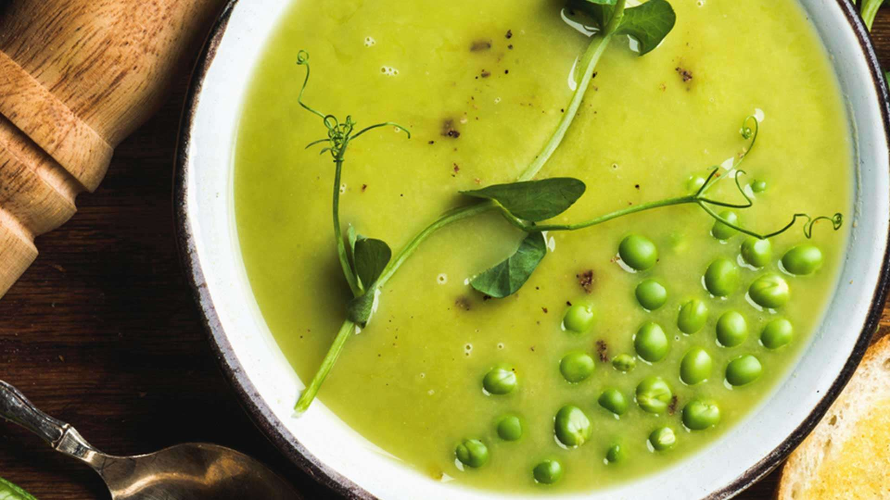

Sopa de Ervilha

Ingredientes
- 1 cebola picada
- 2 colheres de sopa de manteiga
- 1 calabresa cortada em pedaços pequenos
- 600 g de ervilha congelada
- 1 batata descascada e picada
- 3 cubos de caldo de costela
- 1 litro de água
- sal e pimenta a gosto
Modo de Preparo
- m uma panela derreta a manteiga e doure a cebola.
- Acrescente a água, o caldo de costela e as batas e deixe ferver até que as batatas estejam cozidas.
- Enquanto isso, em uma frigideira, frite a calabresa e reserve.
- Quando a batata estiver pronta, acrescente as ervilhas congeladas.
- Espere o caldo voltar a ferver e deixe cozinhando por mais 15 minutos.
- Bata o caldo no liquidificador até virar um creme.
- Volte com o caldo para a panela e acrescente a calabresa frita.
- Acerte o tempero e pronto!